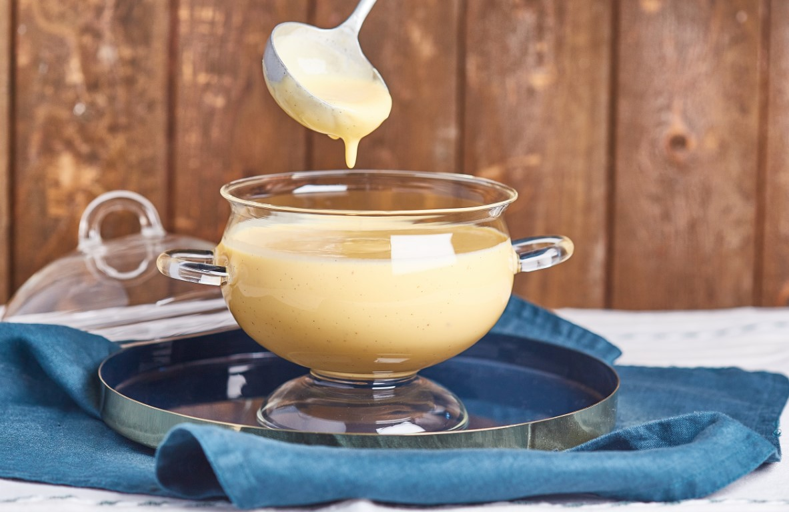

Édes - Mákos guba
Hozzávalók
Mákos guba
- 4 db kifli
- 5 dl tej
- 1 csomag vaniliás cukor
- 3 db tojás
- 15 dkg mák (darált)
- 5 dkg porcukor

Vanília sodó
- 2 db tojássárgája
- 2 ek cukor
- 1 csapott ek finomliszt
- 5 dl tej
- 1 csomag vaníliás cukor

Elkészítés
Mákos guba
- A tejet kezdjük el melegíteni. A tojások sárgáját keverjük el a cukorral és a vaníliás cukorral, adjuk a tejhez. (Ne hagyjuk felfőni.)
- A mákot keverjük el a porcukorral.
- Vajazzunk ki egy jénai tálat, és rétegezzük a tál aljára a karikára vágott kifliket. Locsoljuk meg egy adag tejes keverékkel, és szórjunk rá mákot. Folytassuk így, amíg el nem fogynak a hozzávalók.
- Tegyük előmelegített sütőbe, és süssük 180 fokon 20-25 percig.
Vanília sodó
- Keverjük ki a tojások sárgáját a cukorral és a vaníliás cukorral.
- Ha már elkeveredett és kissé habos, adjunk hozzá kevés lisztet és tejet. (Mindig kevés liszttel kezdjük, hogy ne legyen csomós.)
- Gőz fölött sűrítsük be, és már tálalhatjuk is a gubához.